4. Implementation¶
4.1. Setting up Gazebo and Planning Scene¶
1 2 3 4 5 6 7 8 9 10 11 12 13 14 15 16 17 18 19 20 21 | <!-- Add Models PATH for Gazebo -->
<env name="GAZEBO_MODEL_PATH" value="$(find pkg_vb_sim)/models"/>
<!-- Arguments -->
<arg name="paused" default="false"/>
<arg name="use_sim_time" default="true"/>
<arg name="gui" default="true"/>
<arg name="rviz" default = "false"/>
<arg name="headless" default="false"/>
<arg name="debug" default="false"/>
<arg name="extra_gazebo_args" default="--verbose"/>
<!-- Spawn Task-5 Models in Gazebo -->
<include file="$(find pkg_vb_sim)/launch/task5_world.launch" />
<!-- Spawn two UR5 in Gazebo -->
<include file = "$(find pkg_vb_sim)/launch/two_ur5_gazebo.launch" />
<!-- Spawn Task 5 Boxes -->
<rosparam file ="$(find pkg_vb_sim)/config/config_package_colour.yaml"/>
<node name= "task5_spawn_models" pkg= "pkg_vb_sim" type="task5_spawn_models.py"/>
|
This is a snippet of task5_solution.launch, and from there first, the gazebo world is launched where the environment of the gazebo is loaded which includes the warehouse, shelf, lights, etc.
Then the two UR5 move groups are launched which loads the two UR5 arms UR5#1 and UR5#2 at the right locations. This also launches the RViz for both of the arms to control them. RViz and Gazebo are interfaced together using MoveIt! plugin.
And at last, the packages are spawned on the shelf at their right locations. This is what the Gazebo environment should look like:
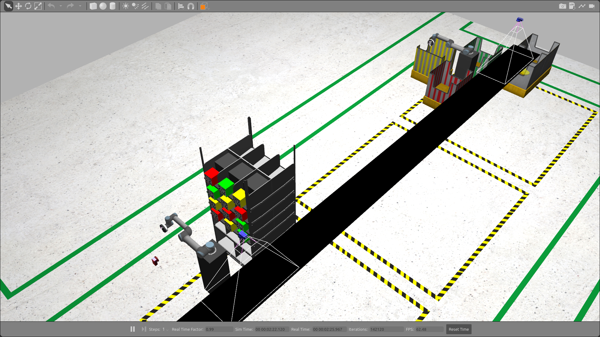This also launches two RViz windows, one for both of the arms.
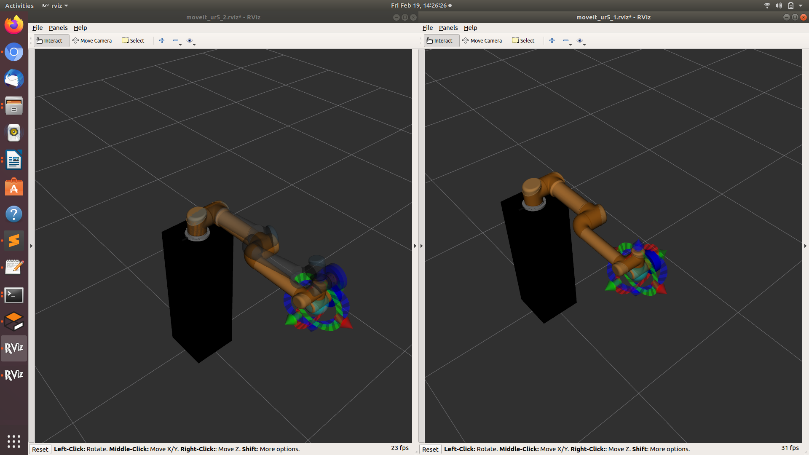4.2. Saving Trajectories¶
Next, we need to save trajectories to pick and place the packages. But before we do that we need to import collision meshes of the shelf, packages, bins, camera, and conveyor belt in the RViz planning scene. These meshes were imported in RViz from pkg_vb_sim. MoveIt! will now consider these collision meshes while planning the trajectories and this way we can ensure that the arm do not collide with anything in the Gazebo environment. This is what the RViz looks like after making the planning scene:
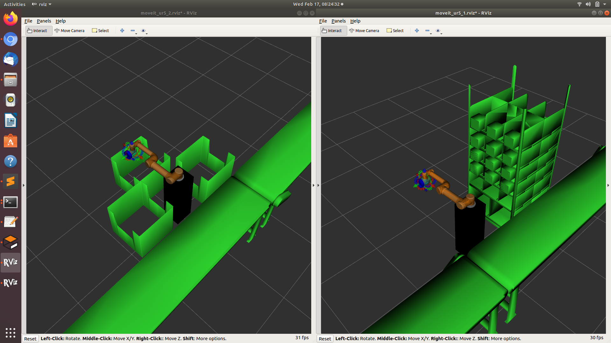Saving efficient trajectories is a very important aspect of this project. They should be able to be executed as fast as possible. It doesn’t matter whether which path the arm takes as long as it is not colliding with something in the environment. A lot of effort was put to save the best trajectories possible.
Since the solution should be dynamic, that is the arm should be able to pick packages from the shelf in any possible order. For that, we need to have a common starting and ending position of the arm. This is called a home position. For UR5#1, this is the home position:
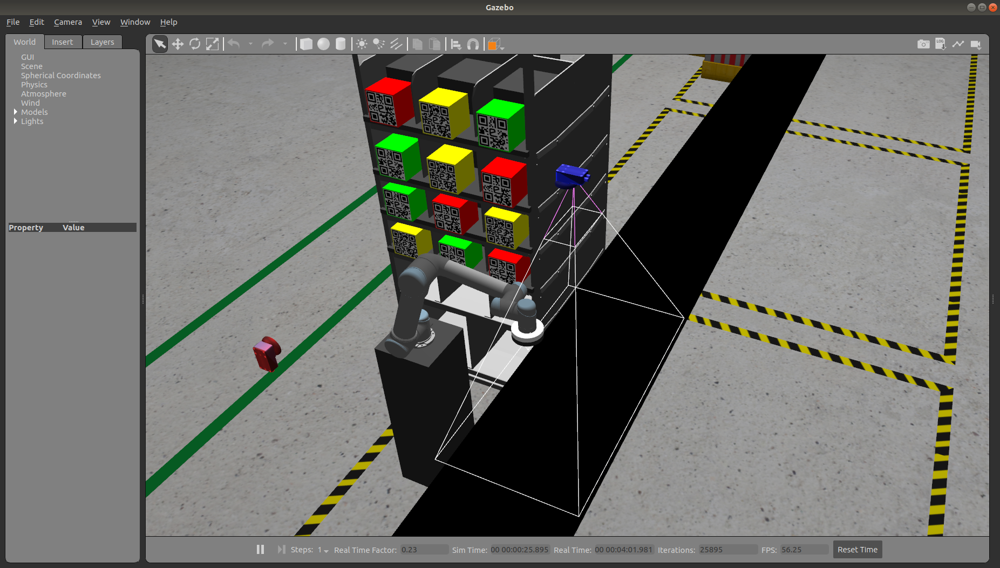Similarly, there are three home positions for UR5#2. We will get into the details later.
Home Position #1
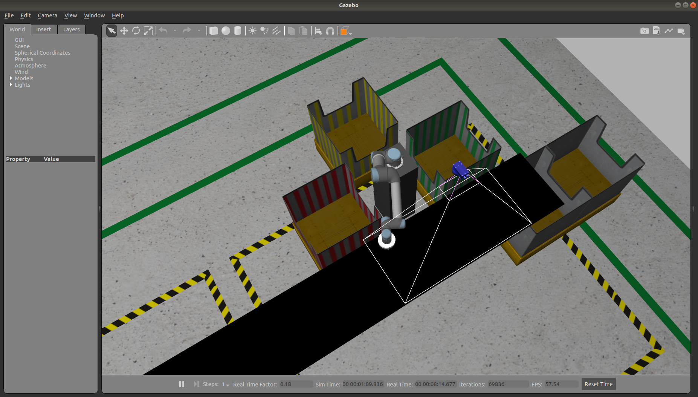Home Position #2
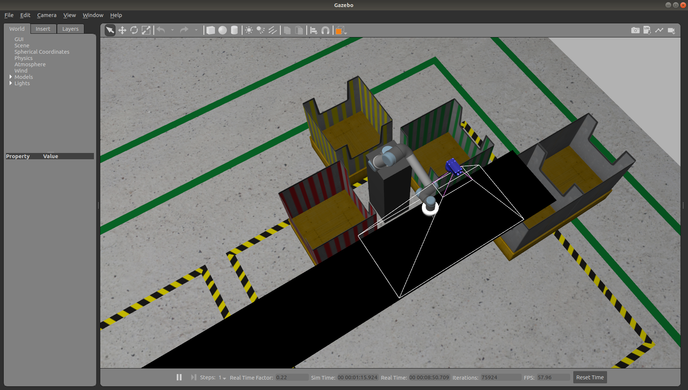Home Position #3
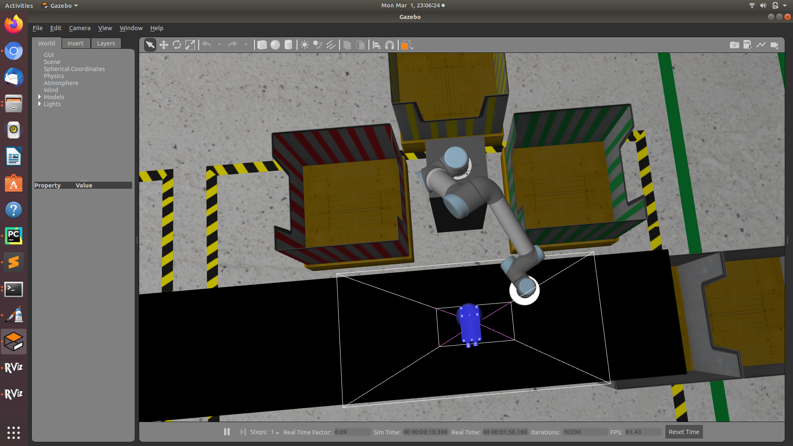The joint angles of the home positions can be noted from the joint tab in RViz.
4.2.1. Determining Execution Time¶
To save good trajectories, we obviously need to know the time it will take for the trajectory to execute. We can’t just see and tell which is the fastest trajectory. This information is stored in the trajectory planned. In MoveIt!, the planned trajectories are of type JointTrakectory.msg . We can access the execution time like this:
1 2 3 | no_of_joint_points = len(computed_plan.joint_trajectory.points)
execution_time = computed_plan.joint_trajectory.points[no_of_joint_points - 1].time_from_start
print("Execution Time: ", planned_time.secs + planned_time.nsecs / 1000000000.0)
|
4.2.2. Automate Trajectory Saving¶
Saving trajectories is a very tedious and time taking process. Since we already have quantifiable measures to determine the best trajectory, we can write a python script to do the same. In the following python script, what we have done is to first plan 150 trajectories and then save the trajectory which has the least execution time. This is done again and again for each of the packages. The code is pretty self-explanatory.
1 2 3 4 5 6 7 8 9 10 11 12 13 14 15 16 17 18 19 20 21 22 23 24 25 26 27 | index = 0
while index < 150:
index = index + 1
ur5_1.hard_set_joint_angles(pkg_joint_angles, 5)
no_of_joint_points = len(ur5_1._computed_plan.joint_trajectory.points)
if no_of_joint_points > 0:
if ur5_1._computed_plan.joint_trajectory.points[0].positions != (0.0, 0.0, 0.0, 0.0, 0.0, 0.0):
planned_time = ur5_1._computed_plan.joint_trajectory.points[no_of_joint_points - 1].time_from_start
planned_trajectory.append(ur5_1._computed_plan)
execution_time_list.append([planned_time.secs + (planned_time.nsecs / 1000000000.0), index])
print("Execution time: ", planned_time.secs + (planned_time.nsecs / 1000000000.0))
else:
print("Wrong Trajecctory. Starting from zero")
index = index - 1
else:
print("iteration Failed!!")
index = index - 1
# Sort the list
execution_time_list = sorted(execution_time_list, key = lambda x: x[0])
file_name = 'home_to_pkgn' + pkg + '.yaml'
file_path = file_path + file_name
# Dump the best trajectory
with open(file_path, 'w') as file_save:
yaml.dump(planned_trajectory[execution_time_list[0][1]], file_save, default_flow_style=True)
|
4.3. QR Detection¶
The next step is to determine the colors of the packages which have QR codes on them denoting their colors on the shelf. There is a 2D camera placed in front of the shelf. With the help of this camera we can determine the color of the packages in the following ways:
- QR Detection
- Colour Detection
For now, we will talk about only QR Decoding as it is a more practical approach to identify items on the shelf. The colour detection method may get confuse if there are two different items of same colour on shelf. This is why in real life as well QR or barcode detection method is used to identify items.
This is what the feed from the 2D camera(left) looks like:
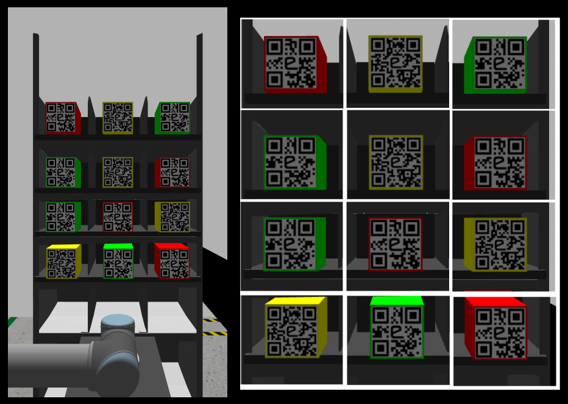To decode QR codes, we now crop this image and make 12 different images of each package as you can see on the right in the above image. This is done using the OpenCV library for python. Then QR code is decoded from each image and stored in a list which is then published to a ROS topic ‘eyrc/package/colours’ which can be accessed by any other ROS node. The format in which this data is described in Camera1Image.msg This data is used to find the order on the shelf and to update the Inventory Sheet.
This is an example of how you can achieve this
1 2 3 4 5 6 7 8 9 10 11 12 13 14 15 16 17 18 19 | # Image feed from the 2D Camera
cv_image = self.bridge.imgmsg_to_cv2(data, "bgr8")
# Iterate through each row and column of shelf
for row in range(4):
for column in range(3):
# Start and final horizontal coordinates of the respective package
x_start = 280 + row * 165
x_final = x_start + 165
# Start and final vertical coordinates of the respective package
y_start = 80 + column * 190
y_final = y_start + 190
# Image of the respective row and column
cropped_image = cv_image[x_start:x_final, y_start:y_final]
# Store the decode colour of the package in a list
self.pkg_colour_list[3 * row + column] = decode_qr(cropped_image)
|
4.4. Ros-IoT Bridge Setup¶
This section explains how communication happens between the ROS nodes and the Internet. This bridge is a very crucial part of the project. This allows us to receive orders placed on the MQTT topic and to update the Inventory spreadsheet which includes Inventory, Incoming Orders, Dispatched Orders, and Shipped Orders sheet.
This is a ROS node called node_action_server_ros_iot_bridge which initializes an Action Server to perform all the IoT related tasks. You can refer to the API documentation of this node for details by clicking on the name of the node.
This node can communicate using two IoT protocols:
HTML protocol is used to push data to the spreadsheets whereas MQTT protocol is used to receive orders.
First the configuration file of the action server is loaded on the parameter server which tells the node about the MQTT topic to receive the orders from, spreadsheet ID’s, and ROS topic on which to publish the data published on the MQTT topic
This node imports this iot module to perform the IoT-related tasks. Whenever a goal is sent to the action server, it creates a new thread and handover the task to the IoT module instance to complete that. This way it is capable to handle multiple action client goals simultaneously.
The communication between action server and action clients is done using action file msgRosIot
All the orders received on the MQTT topic is also published on a ROS topic called ‘/ros_iot_bridge/mqtt/sub’.
4.5. Order Handling¶
This job is handled by incoming_order_handler node. This node first subscribes to the ROS topic ‘/ros_iot_bridge/mqtt/sub’ where all the orders are published by Ros-IoT bridge which was received by it on the MQTT topic. Order is in JSON formatted string and therefore first needs to be converted to a dictionary which is done using the JSON library for python. Some additional details are added to this dictionary like Cost and Priority and then this dictionary is pushed to the Incoming Orders spreadsheet by sending a goal to do the same to the Ros-Iot bridge action server through an action client.
The same data is also published on a ROS topic ‘eyrc/vb/orders’ in the format described in NewOrder.msg. Other ROS nodes will subscribe to this topic to receive the details of the new order placed.
4.6. Picking Up Packages From Shelf¶
This job is handled by node_ur5_1_pick. This node subscribes to the ROS topic ‘eyrc/vb/orders’ where all the details of new orders are published. The order details are converted to dictionary from JSON formatted string first and then this dictionary is appended to a local list called orders_list[].
Initially, the UR5#1 arm is waiting at its home position. Now whenever a new order is placed, the details are appended to orders_list[]. This list is then sorted according to the priorities of their order. Since the higher priority orders have the highest cost and the lowest priority package has the lowest cost, this information is used to sort the list. This way the higher priority orders are at the top of the list and lower priority orders at the last.
Now when UR5#1 arm will process the order which is at the top of this list or we can say the order at index value 0. Then a package of the same priority is searched in the shelf in the following order:
# Search order of packages while selecting the package to pick up
pkg_search_order = [12, 02, 22, 01, 32, 11, 00, 20, 10, 21, 30]
This is done to make the arm pick those packages first, which takes the least time to pick and place. This order can be determined from the execution time of trajectories we saved before. This way we can process the orders as fast as possible.
After the package has been placed on the conveyor belt, the same process is repeated to process the remaining orders. One thing which needs to be mentioned is that pick and place operation of UR5#1 arm and order handling is done asynchronously.
After placing the package on the conveyor belt, the details of the order are published on a ROS topic called eyrc/vb/dispatched_pkg in a format described in DispacthedPkg.msg. This is done so that UR5#2 arm knows the details of the package coming towards it and be ready at the right location to pick it up. The details of the dispatched order are also pushed to the Dispatched Orders sheet. Using google’s app script, an email notification is also sent to the customer that their order has been dispatched.
But since we will not be receiving orders all the time, there are two scenarios possible:
- There are no orders to process for now
- There are orders to process
Let’s see one by one what we will do in each case
4.6.1. There are no orders to process for now¶
In this case the arm has to wait for the new orders to get placed. But waiting at the home position is not a great idea. What we can do is move our arm to such a position, from where it can reach to the packages more quickly. We call this position as waiting position. This is how it looks for UR5#1 arm:
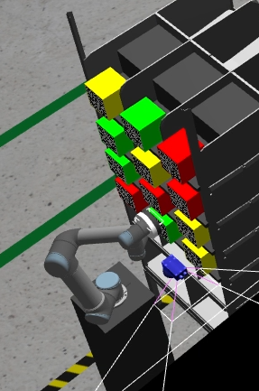One important thing to note here is that, we can only reach the highlighted packages quickly from this waiting position.
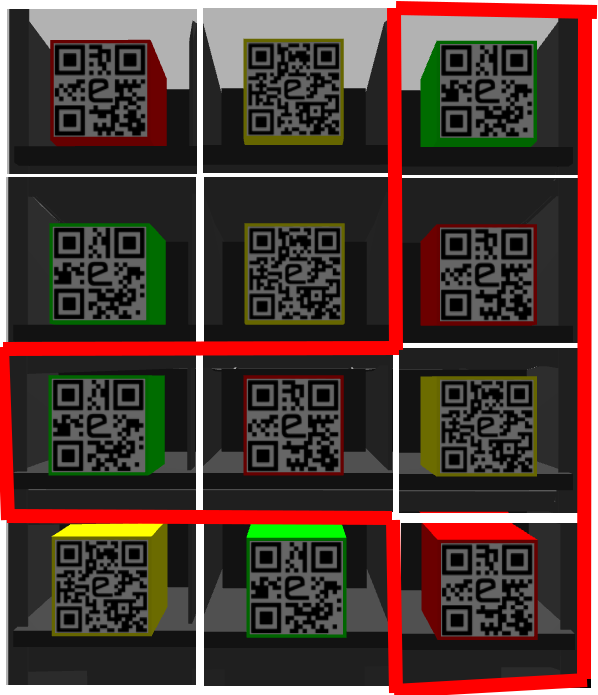To reach other packages from the waiting position actually takes more time compared to going to these pacakges directly from the home position
Therefore, we don’t go to this waiting position as soon as we have no more orders to process. There needs to be two conditions satisfied:
- We have waited for 2 seconds at the home position for new orders
- There are at least one pacakge of each priority in the highlighted packages.
If one of the condition is not satisfied, we will wait at the home position for the new orders.
Second condition is necessary to make sure that we will definitely find the next order in the highlighted packages. Thus guaranteeing that our time will be saved if we go to this home position.
This is the search order in which the packages will be searched:
# Search order of packages while selecting the package to pick up from the waiting position
pkg_search_order = [12, 22, 2, 32, 20, 21]
4.6.2. There are orders to process¶
If we are continuosly getting new orders, we will go to the pacakges directly from the home position.
4.7. Placing Packages in the Bin¶
This job is handled by node_ur5_2_place.
Now here comes a part which is a little difficult to understand at first. So let’s understand it step by step.
Before we continue, keep these two points in mind. The strategy to sort packages is based solely on these two points.
- Conveyor belt is faster than the arm, i.e conveyor belt can move the package x distance in less time if arm was moving it for the same distance.
- To sort the packages as soon as possible, conveyor belt has to keep running for most of the time. We will explain the reason behind it in section 4.7.2.2.
We will implement these points one by one. Let’s consider the first point.
4.7.1. Deciding position to pickup the package¶
Since, the belt moves the packages at faster speed, the packages are picked up from a position near their corresponding bins so that the belt does the job of transporting the packages for as long as it can. After that UR5#2 arm takes over. For this reason, the red and yellow packages are picked up from home position #1 and the green packages are picked up from home position #3 as these positions are near to their corresponding bins.
This was pretty straightforward and easy to understand. Now let’s move on to the second point.
4.7.2. Keeping the Conveyor Belt running¶
Now we will combine both the points, and decide a home position which fulfils both of these points.
To implement this, we decide the right location for the package to pick it up so that belt has to stop only momentarily so that the arm can turn on its vacuum gripper while keeping in mind the first point as well. Let’s see how this is exactly implemented.
When the details of the dispatched order are received by the UR5#2 arm, it can be in two states:
- The UR5#2 arm is free and ready to pickup the next package.
- The UR5#2 arm is currently busy in the process of dropping a package in the bin.
Let’s discuss what we will do in these situations one by one:
4.7.2.1. When UR5#2 arm is free¶
In this case, we will move the UR5#2 arm to home position #1 if the next package is of either red or yellow colour. Otherwise if the colour of package is green we will move the arm to home position #3. The arm will now wait for the package to come to this location to pick it up.
4.7.2.2. When UR5#2 arm is busy¶
Now in this case there are again two possibilities.
- The arm can reach home position #1 if the next package is of either red or yellow colour, before the new package arrives there after dropping the current package.
- The arm can not reach home position #1 before the new package arrives there after dropping the current package.
But how do we even determine whether it will be able to reach or not? This is done like this.
When the details of a dispatched package are received, UR5#2 node notes the current sim time. Now when the arm drops the package it was busy with, in the bin, the sim time is noted again. The difference between both of these times tells us the time elapsed so far since the package was dispatched. Let’s call this time difference time_elapsed_after_dispatch.
Time taken by the package to get to the home position #1 from when it was dispatched is experimentally determined to be 6.7 seconds.
Now if we minus the time_elapsed_after_dispatch from 6.7 seconds, we will get the time required by the package to reach home position #1 from the current location on the conveyor belt.
From the saved trajectories, we already know the time it will take for the arm to reach home position #1 from the current bin. By comparing these two times, we can be sure whether the UR5#2 arm will be able to reach home position #1 before the package reaches there or not. If it can, the arm will go to home position #1 otherwise it will go to home position #2. It is observed that the arm can reach home position #2 every time before the package reaches there so no need to make similar decisions for this home position.
In case the next package is of green colour, we will directly go to home position #3. We won’t condsider all these things in this case.
This is the code which implements the same:
go_to_home_1 = False
go_to_home_2 = False
go_to_home_3 = False
if prev_bin == 'red':
if (current_pkg_color == 'red' or current_pkg_color == 'yellow') and ur5_2.time_lapsed_since_dispatch < 5.3:
go_to_home_1 = True
elif current_pkg_color == 'green':
go_to_home_3 = True
else:
go_to_home_2 = True
elif prev_bin == 'yellow':
if (current_pkg_color == 'red' or current_pkg_color == 'yellow') and ur5_2.time_lapsed_since_dispatch < 4:
go_to_home_1 = True
elif current_pkg_color == 'green':
go_to_home_3 = True
else:
go_to_home_2 = True
elif prev_bin == 'green':
if (current_pkg_color == 'red' or current_pkg_color == 'yellow') and ur5_2.time_lapsed_since_dispatch < 4.1:
go_to_home_1 = True
elif current_pkg_color == 'green':
go_to_home_3 = True
else:
go_to_home_2 = True
Now one may ask why so much hassle? Why can’t we just stop the belt if the package reaches before the arm?
The answer is that if the belt is stopped then the package coming behind it will also be stopped which will then result in more time to ship that package. If we pick the package from home position #2 where the arm will reach before the package arrives there, the package coming from the back won’t have to stop. Therefore to keep the belt running continuously, this method is used.
Now after attaching the package to the vacuum gripper, a saved trajectory is played to drop that package in the correct bin. The Colour of the bin was determined from the details received earlier about the dispatched package from node_ur5_1_pick.
After dropping the package, the ShippedOrders sheet is also updated by sending a goal to the Ros-IoT bridge action server through an action client. Using google’s app script, an email notification is also sent to the customer that their order has been shipped.
4.8. Dashboard¶
A dashboard is necessary to provide at-a-glance views of key performance indicators. This is how the dashboard looks like:
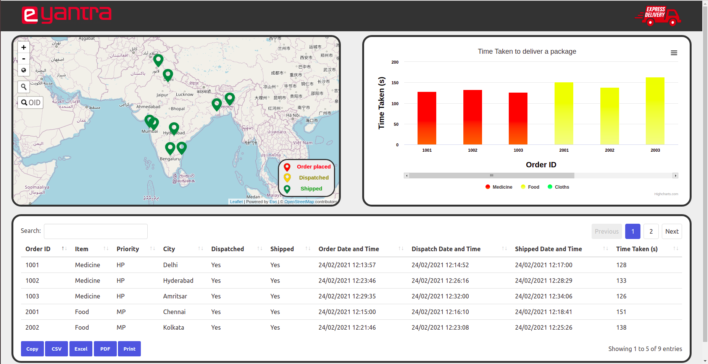You can access the dashboard from this link.
In the dashboard, the following details are shown:
4.8.1. Map¶
In the map, the location of the orders is shown with the help of a marker. Users can hover over these markers to see the details and status of the order. The user is also provided with a search bar to find locations quickly. It will automatically zoom to the searched location. User is also provided with a functionality to search an order in the map using its order id. At the top left corner, there are 3 buttons available by which the user can zoom in, zoom out and reset the map to default view. This map is updated every 1 second.
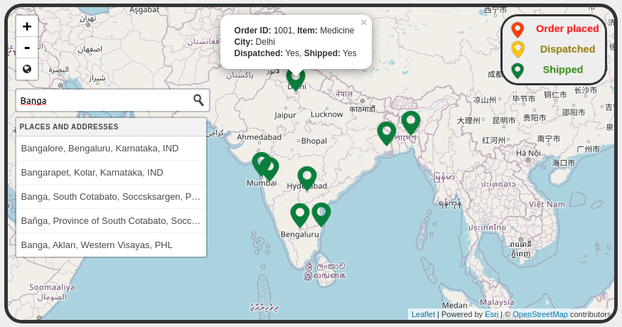As you can see there are three types of markers.
Red is when the order is placed.
Yellow when the order is dispatched.
Green when the order is shipped.
For making this map, Leaflet is used.
4.8.2. Table¶
This table summarizes all the details of an order. The table can be sorted by clicking the column header. At the bottom of table, user is provided with quick export options like PDF, CSV, Excel, Print and Copy to share the data to people who don’t have access to the dashboard. This table is also refreshed every 1 second.
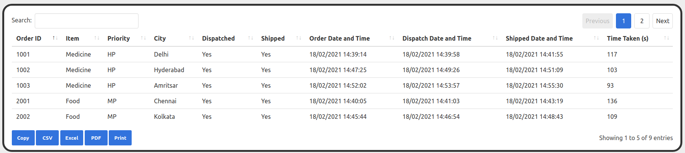To make this table, the DataTables jQuery plugin is used.
4.8.3. Bar Graph¶
This graph shows the time taken for the order to get shipped from when the order was placed. Medicines are shown with a red bar, Food with a yellow bar and Clothes are shown with a green bar.
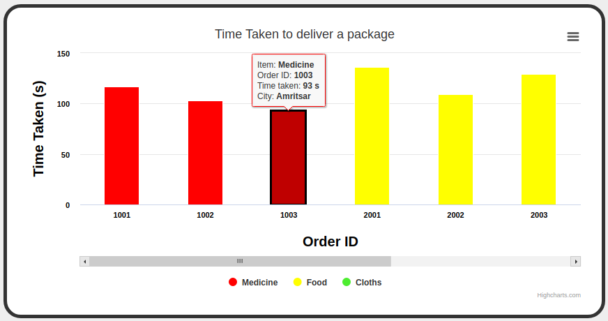This table is linked with the table.. Therefore, whatever changes we make to the table like sorting, search, etc. are also reflected in the bar graph for a better user experience. Similar to the table, here also user can hover over the columns to see the information regarding that order.
In the bar graph also, quick export options are provided to the user to share data.
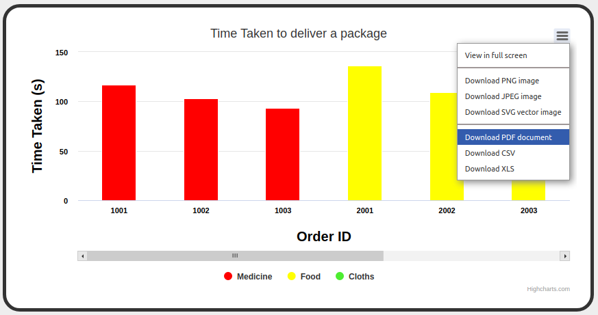To make this bar graph, the HighCharts jQuery plugin is used.
4.9. RQT Graph¶
To get a deeper understanding of how everything is working, you can refer to this RQT graph. Here all the connections between nodes are shown.
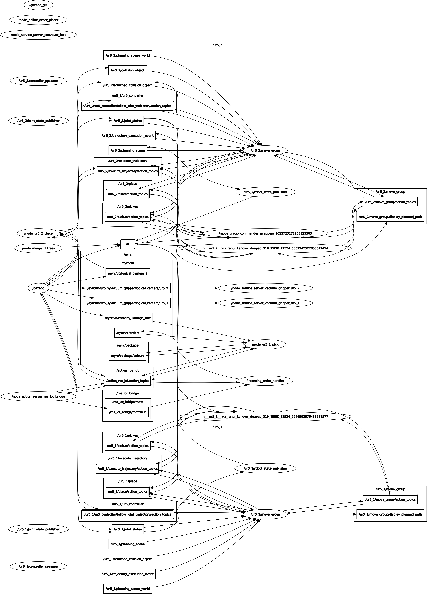